Urban traffic simulation is usually built using large game engines or specialized simulation frameworks. While these systems are powerful, they often require tightly coupled modules, centralized simulation loops, and significant engineering effort to maintain.
While exploring NVIDIA Omniverse, I wanted to test a different approach.
This question led to the development of a modular urban driving simulation built using NVIDIA Omniverse and Universal Scene Description (USD). The result is a lightweight simulation environment where vehicle behavior, traffic control, and intersection logic are implemented as modular components interacting through scene data.
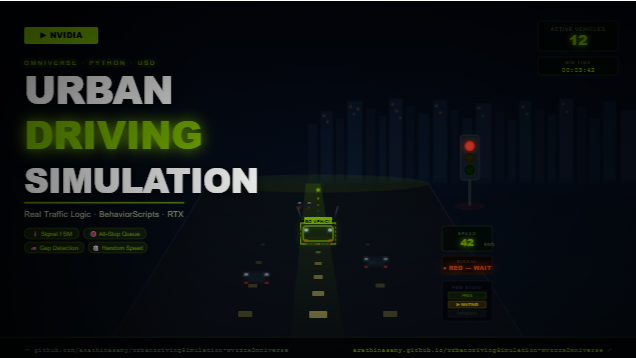
Simulation Demo
The video below shows the simulation environment in action.

The environment and vehicle meshes used in the simulation were sourced from freely available models on Sketchfab to quickly prototype the scene.
In the Simulation
- Vehicles follow spline-based road networks
- Traffic lights dynamically control vehicle flow
- All-way stop intersections manage vehicle queues
- Vehicles implement car-following behavior and adjust speed automatically
- Randomized speed parameters create more natural traffic patterns
- Multiple camera modes allow observation of the system
Although the environment is relatively simple, the modular design allows the simulation to be extended easily.
Core Concept: Scene-Driven Simulation
A key design goal was to avoid building a centralized simulation engine. Instead, the simulation relies on USD as a live data layer.
- Scene objects publish their state through USD attributes
- Behavior scripts read those attributes and respond accordingly
- No central simulation controller is required
For example: traffic lights publish their signal state → vehicles read it to decide whether to stop → intersections maintain queue data that vehicles query.
The scene becomes the configuration. The code becomes the behavior.
System Architecture
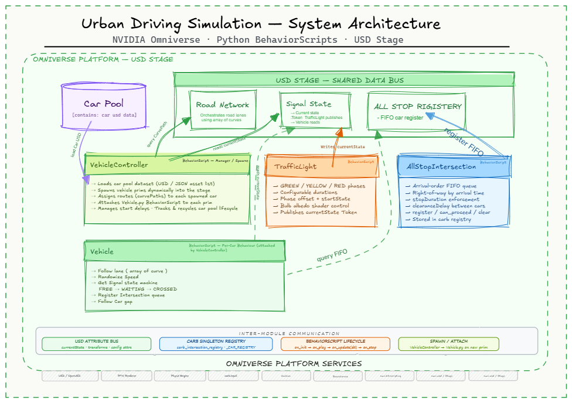
| Component | Role |
|---|---|
| VehicleController | Spawns vehicles and manages the active vehicle pool within the simulation |
| Vehicle | Path following, speed control, car-following logic, reaction to traffic lights and intersections |
| TrafficLight | Publishes the current signal state to the scene, allowing vehicles to react appropriately |
| AllStopIntersection | Maintains a queue of vehicles approaching the intersection and manages right-of-way logic |
Each component is implemented as a BehaviorScript attached to a scene prim in Omniverse. Because each script operates independently and reads data from the scene, the system remains highly modular and extensible.
Advantages of a USD-Based Architecture
Modular System Design
Behavior is encapsulated in independent scripts attached to scene objects.
Scene-Driven Configuration
Simulation parameters can be adjusted directly within the scene.
Easy Extensibility
New behaviors can be added without modifying existing components.
Synthetic Data Compatibility
USD-based environments integrate naturally with simulation and data generation pipelines.
Future Development
- Autonomous ego vehicle with route planning
- Distinct NPC driving behaviors — lane changes and overtaking
- Pedestrian agents interacting with crosswalks
- Synthetic data generation for autonomous vehicle perception models
- Automatic OpenStreetMap to USD road network generation
These additions would transform the system into a more complete urban mobility simulation platform.
Conclusion
This project demonstrates that scene-driven simulation using USD and Omniverse can be a powerful alternative to traditional engine-based traffic simulators. By allowing scene data to act as the communication layer between simulation components, the system becomes simpler, more modular, and easier to extend.
This approach opens interesting possibilities for building flexible simulation environments for robotics, autonomous vehicles, and digital twin applications.
Assets & 3D Models: Some environment and vehicle assets were sourced from free models available on Sketchfab to quickly prototype the simulation environment.
A real-time 3D simulation of an automotive manufacturing plant, built in Unity 3D. Reproduces the full production environment — assembly lines, robotic welding cells, press shops, material handling logistics and human operators — all within a navigable first-person walk-through.
What the Simulation Covers
- Body Shop — robotic welding stations assembling car body panels
- Press Shop — automated stamping lines with workers at control terminals
- Assembly Line — multi-station line with animated operators and moving vehicle bodies
- Logistics — forklifts transporting component racks between stations
- Safety Layer — floor markings, signage, fire safety posters throughout
Visual Walkthrough
Assembly Line
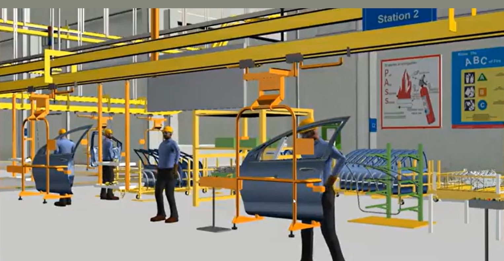
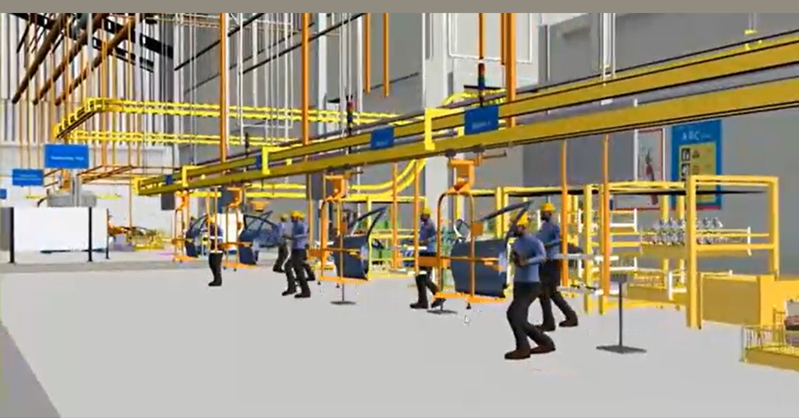
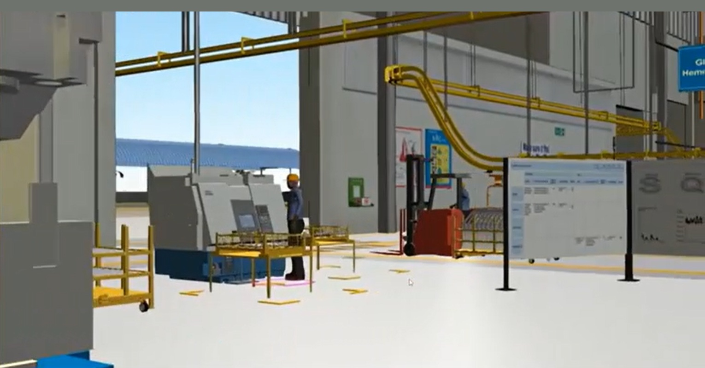
Robotics & Press Shop
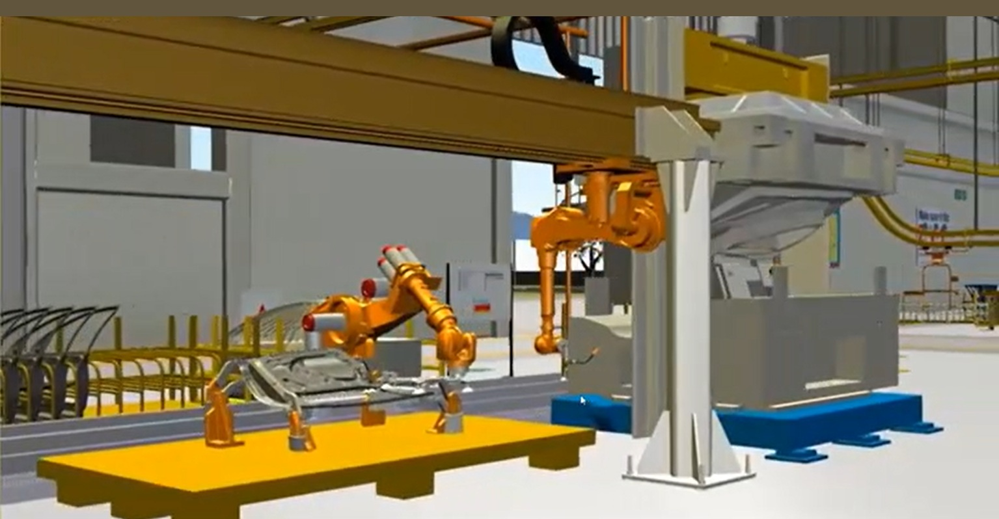
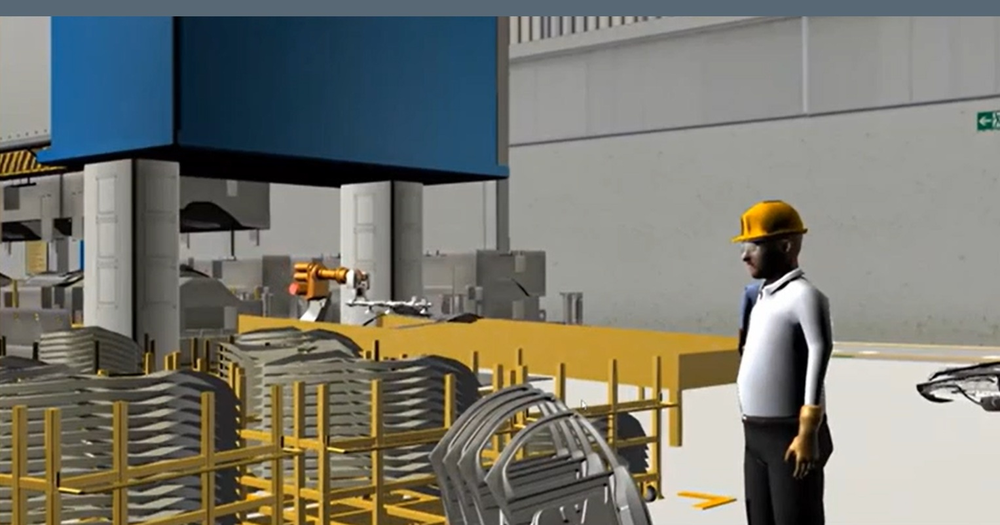
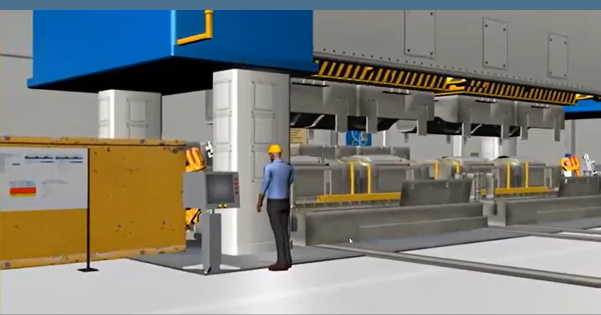
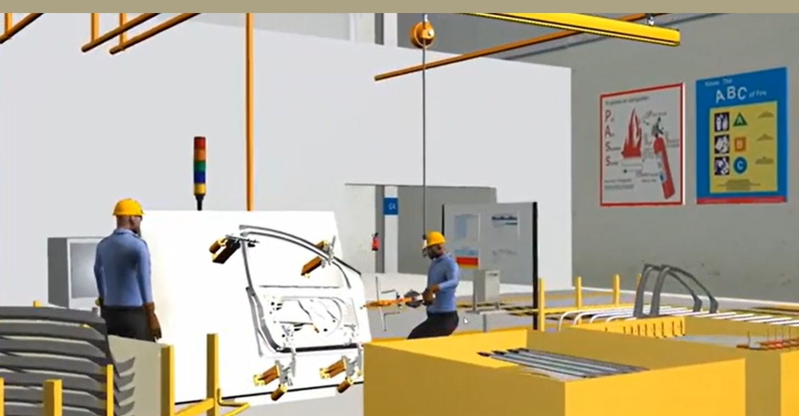
Tech Stack
| Component | Technology | Purpose |
|---|---|---|
| Game Engine | Unity 3D | Real-time 3D rendering, simulation, navigation |
| Language | C# | Simulation logic, NPC behaviour, interaction |
| Animation | Unity Animator | Worker movements, robot arms, conveyor motion |
| Physics | Unity PhysX | Collision, movement, ergonomic simulation |
| Platform | Windows / VR-Ready | Walkthroughs, training, planning reviews |
Key Features
Full Plant Navigation
Walk freely through every zone in first-person, exactly as on a real shop floor.
Animated Production Flow
Workers, robots, conveyors and forklifts move continuously, simulating live cycles.
Multi-Zone Coverage
Assembly, body shop, press shop, welding cells and logistics in one environment.
Safety Review
Station layouts and SOP boards support ergonomic assessment and safety planning.
Station-Level Detail
Signage, safety markings and labels matching real plant standards.
Training & Onboarding
Remote stakeholders learn plant layout and protocols without a physical visit.
An interactive 3D room planning and furniture pre-visualisation tool — customers design their home layout, furnish it from a real product catalog, and walk through the configured space in first-person before making a purchase decision.
Application Walkthrough
Stage 1 — Room Layout & Wall Construction
Users draw their floor plan on a 2D grid with exact wall measurements. The Walls panel offers thickness choices and real-time dimension overlays.
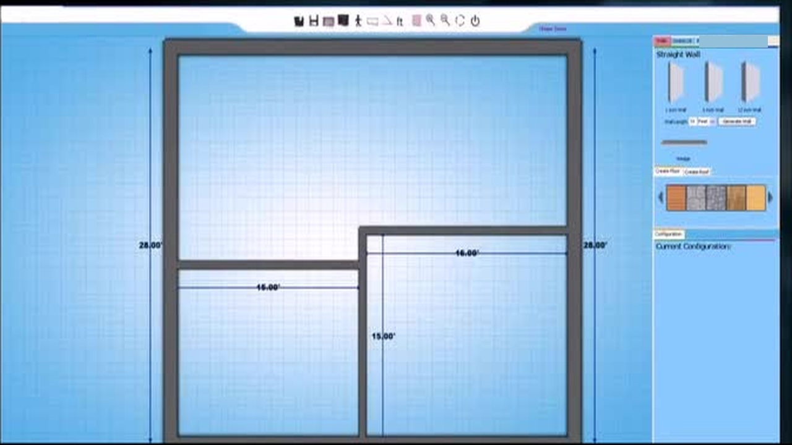
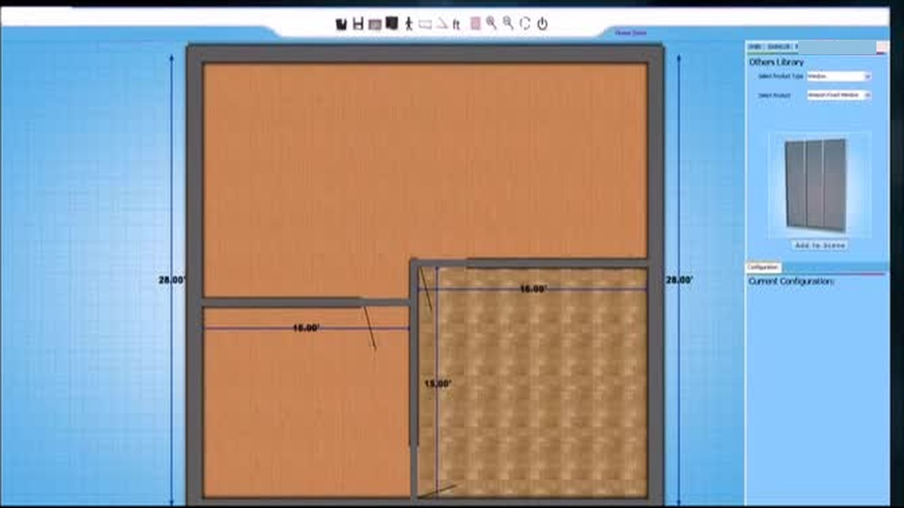
Stage 2 — Furniture from Product Catalog
Browse the Product Library by category and concept line. The Configuration panel logs each item with a unique product ID for order processing.
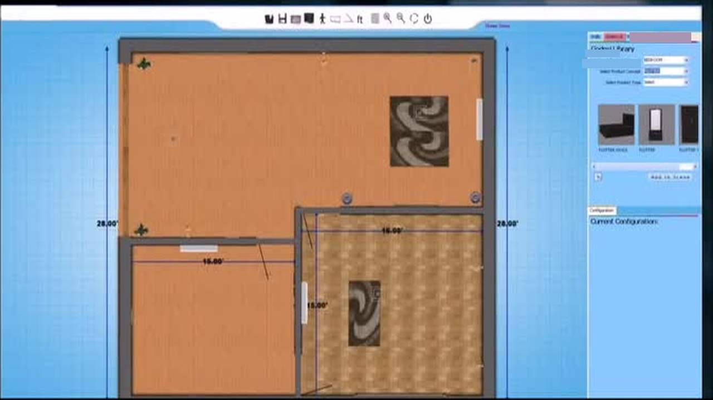
Stage 3 — First-Person Walk-Through
Walk Mode gives an immersive first-person view with adjustable camera height (3ft / 5ft / 7ft) and a live minimap.
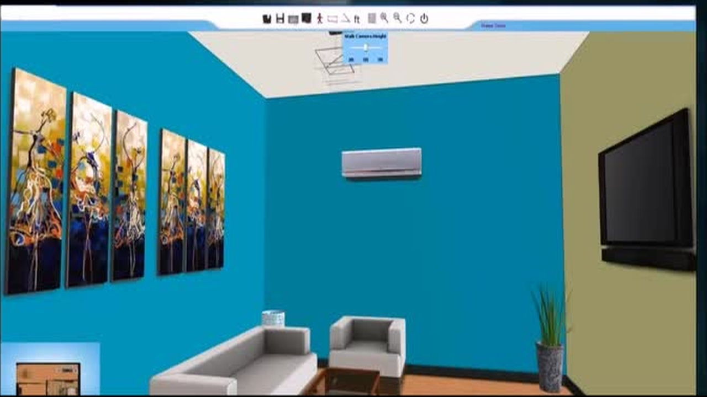
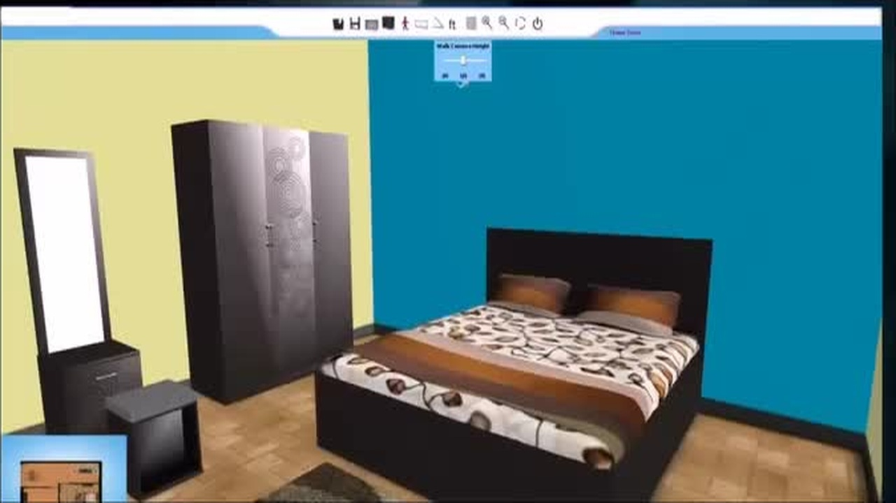
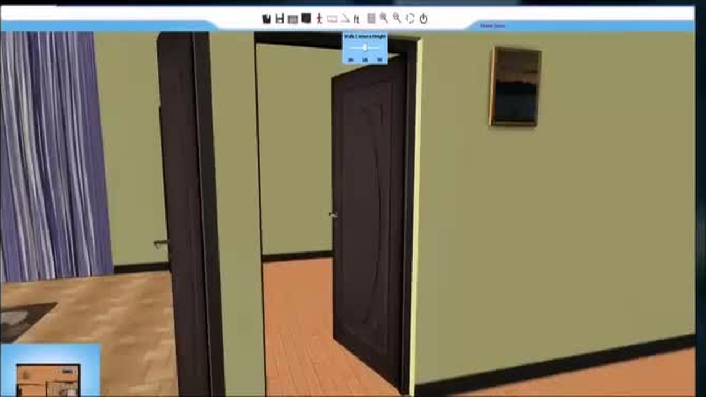
Key Features
Precision Floor Plan
Draw walls with exact measurements. Choose thickness. Generate floors and roofs with one click.
Doors & Windows
Place openings from a product library onto any wall segment in the 2D view.
Real Product Catalog
Furniture by category and concept line, with unique product IDs for order tracking.
Live Configuration Panel
Every item logged with product name and ID — ready to push to an order.
First-Person Walk-Through
Switch from 2D plan to immersive walk mode. Adjust camera height (3ft / 5ft / 7ft).
Real-Time Minimap
Live floor plan minimap showing position and orientation during walk mode.
An interactive desktop application for designing custom jewelry from scratch — choosing pendant shape, gold colour (Yellow / White / Rose), bail style and gemstones — before naming and ordering the creation.
How It Works
Five sequential stages, each updating a central high-fidelity 3D preview in real time:
- Customer Registration — profile linked to the final design for order follow-up
- Shape & Gold Colour — browse pendant forms; choose Yellow, White or Rose gold; live price updates
- Bail Selection — pick the connector style that attaches the pendant to a chain
- Gemstone Selection — Diamonds or Coloured Stones, multiple cut shapes and sizes placed live
- Name Your Creation — personalise the piece before saving and ordering
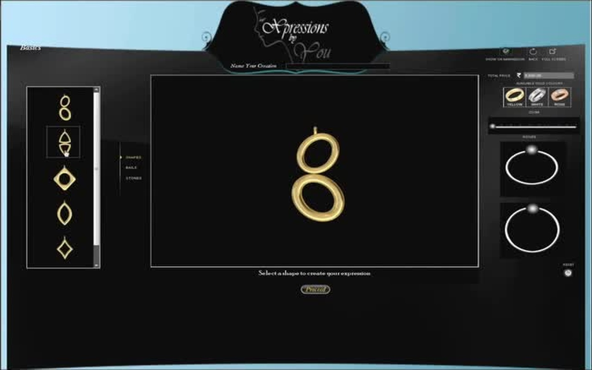
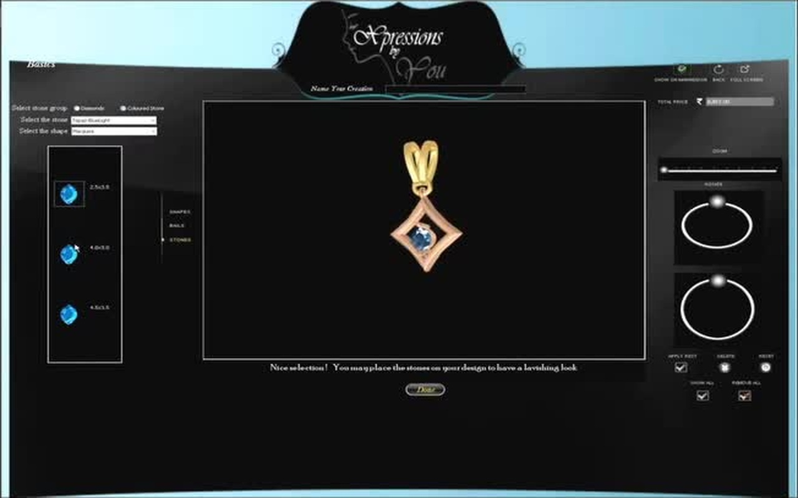
Key Features
- Real-Time 3D Preview — every choice updates the photorealistic render instantly
- Three Gold Colours — Yellow, White and Rose rendered accurately in real time
- Dual Stone Category — Diamonds and Coloured Stones with multiple cuts and sizes
- Live Pricing — total cost updates with every configuration change
- Named Creation & Order Output — fully specified design handed directly to the jeweler
An immersive Mixed Reality meeting and collaboration platform built for internal use at Mercedes-Benz AG — allowing distributed teams to meet, collaborate, and share 3D content in a shared virtual space. Developed over 3 years as part of the Principal Consultant role at Mercedes-Benz Research & Development, the application was nominated for the Unity Awards 2021.
What It Does
The application enables remote and co-located teams to share an immersive 3D collaboration space — combining Mixed Reality headsets with real-time multi-user networking to create a productive virtual meeting environment where users can view, interact with, and annotate 3D content together in real time, regardless of physical location.
- Multi-user shared AR/MR environment for team meetings and design reviews
- Real-time 3D content sharing and spatial annotation
- Optimised audio/video communication for low-bandwidth environments
- Cross-device compatibility — HoloLens and mobile platforms
- Deployed in active productive use within Mercedes-Benz AG
My Contribution
- Architected and developed the core MR remote assistance and collaboration stack
- Owned latency/jitter tuning for audio/video communication across devices
- Built the cross-device communication layer using TCP/UDP/WebSockets
- Served as Product Owner and Solution Architect — defining technical roadmap and CI/CD pipeline
- Maintained cross-platform compatibility across HoloLens/UWP and mobile
Tech Stack
| Component | Technology | Purpose |
|---|---|---|
| Engine | Unity 3D | Real-time 3D rendering, multi-user environment |
| Platform | HoloLens / UWP / Mobile | Cross-device MR experience |
| Networking | TCP / UDP / WebSockets | Real-time low-latency communication |
| AR Framework | MRTK | HoloLens interaction and spatial mapping |
| Language | C# | Application logic, network layer, UI |